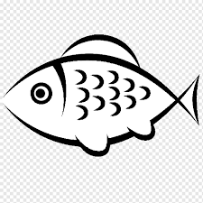
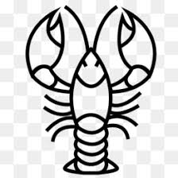

Риби - класифікація водних хребетних тварин. Велика група челюстноротих, для яких характерне зяброве дихання на усіх етапах постембріонального розвитку організму.
Ракоподібні, як і інші членистоногі, мають хітиновий экзоскелет. Оскільки він обмежує зростання тварини, экзоскелет періодично скидається в ході линьки до тих пір, поки ракоподібне не досягне потрібного розміру. Від інших членистоногих (хелицеровых, комах, багатоніжок) ракоподібні відрізняються наявністю двуветвистых кінцівок і особливої форми личинки - науплиуса. Крім того, у ракоподібних одночасно є присутніми 2 пари вусиків : антеннулы і антени. Дихання у більшості представників здійснюється за допомогою зябер, що є виростами ніжок -
Жаби - загальновживана назва групи тварин із загону безхвостих земноводних. У широкому сенсі термін "жаба" відноситься до усіх представників загону безхвостих. У вузькому сенсі ця назва застосовується по відношенню до представників сімейства справжніх жаб. Личинки жаб називаються пуголовками.
Сазаан, або звичайний короп - вид прісноводих лучеперых риб сімейства коропових. Методом селекції отримані культурні форми. Внесений в міжнародний список 100 найнебезпечніших інвазивних видів.
Карась— рід риб родини коропових . Спинний плавець довгий. Тіло високе з товстою спиною, помірно стиснене з боків. Луска велика й гладенька на дотик. Забарвлення відрізняється залежно від місця проживання. Карась — дуже живуча риба, тому дрібного карасика часто використовують для ловлі щуки як живця. Карасі — промислові риби та об'єкт ставкового господарства.